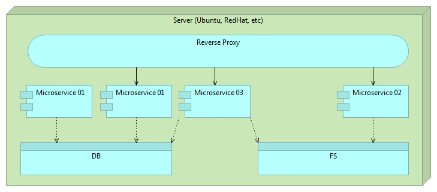

Continuous
Integration
Delivery
Deployment
The Ultimate Culmination of Software Craftsmanship
Created by Viktor Farcic for Technology Conversations / @vfarcic
Viktor Farcic
- Software Architect at Defie
- Never developed in Fortran
- Passionate about TDD, BDD and Continuous Integration, Delivery and Deployment
- Blogger in TechnologyConversations.com
- Java Test-Driven Development: Mastering TDD Through Katas


Why should we care about Continuous Integration, Delivery or Deployment?
Why should we care about Continuous Integration, Delivery or Deployment?
Because it is modern?

Why should we care about Continuous Integration, Delivery or Deployment?
Because it is popular?

Why should we care about Continuous Integration, Delivery or Deployment?
Because everybody talks about it?

Why should we care about Continuous Integration, Delivery or Deployment?
We should care because...
- Earlier feedback to business
- Faster development
- Fewer merge conflicts
- Lower deployment risk
- Changes done faster (no need to wait for release)

What is continuous delivery?

What is continuous delivery?
Continuous Delivery is like sex in high school: everyone talks about it, everyone claims they're doing it, but hardly anyone is.
What is continuous delivery?
Continuous Delivery is a software development discipline where you build software in such a way that the software can be released to production at any time.Martin Fowler

You’re doing continuous delivery when...
- Your software is deployable throughout its life-cycle
- Your team prioritizes keeping the software deployable
- Anybody can get fast, automated feedback on the production readiness
- You can perform push-button deployments
Continuous What?
- Continuous Integration
- Continuous Delivery
- Continuous Deployment
Tools
Tools
Continuous Integration, Delivery and Deployment


Tools
Environments


Tools
Provisioning


Methodologies
- Unit, functional, integration and stress tests
- Test-driven development
- Behaviour-driven development
Flow

Flow

- Checkout the code
- Static Analysis
- Unit & Functional Tests
- Code Coverage
- Packaging
- Deployment
- Integration Tests
- Stress Tests
- Deployment to Production
Deployment

- Often
- Automatic
- Fast
- Zero downtime
- Ability to roll back
Deployment
Mutable Monster Server
Deployment
Mutable Monster Server

Deployment
Immutable Server

Deployment
Immutable Server

Deployment
Immutable Server

Deployment
Immutable Server

Deployment
Immutable Server

Deployment
Immutable Micro Services

Deployment
Immutable Micro Services

Deployment
Immutable Micro Services

Deployment
Immutable Micro Services

Deployment
Immutable Micro Services

Deployment
Immutable Micro Services

Feature Toggles (Switches or Flags)
If you are using branches, you are not doing Continuous Integration/Delivery/Deployment
Branches provide release flexibility
Branches cause delay until problems are discovered
Feature Toggles (Switches or Flags)
Feature toggles provide:
- release flexibility
- feature revert
- testing ground

Additional Information
Continuous Integration, Delivery and Deployment
TechnologyConversations.com